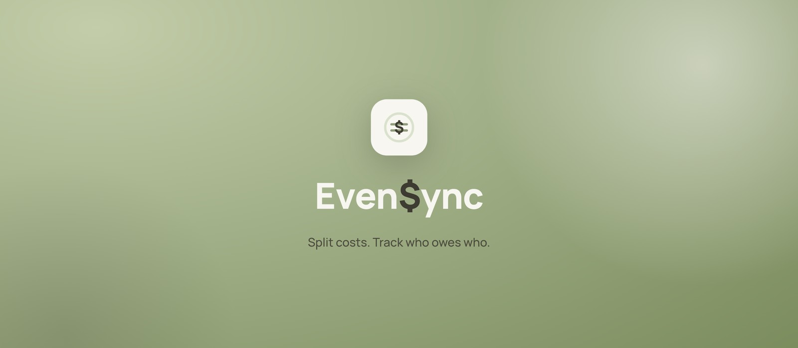
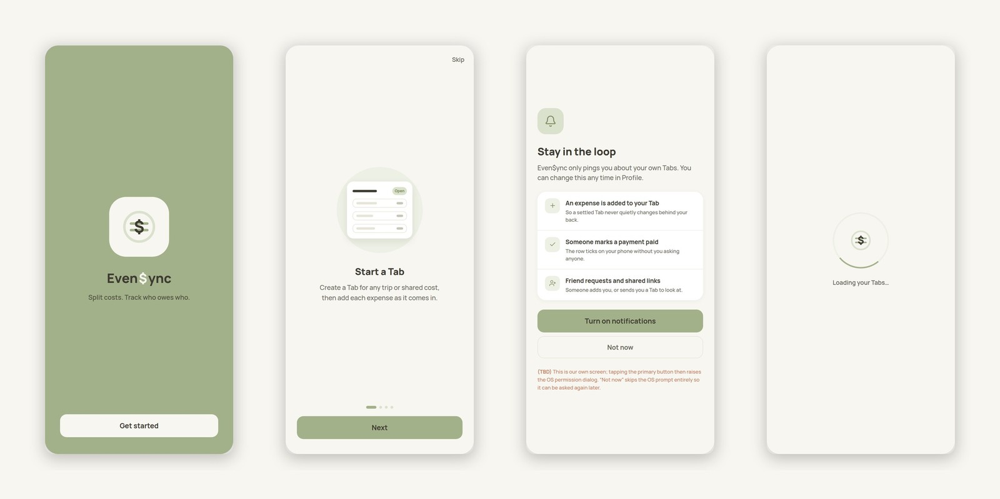
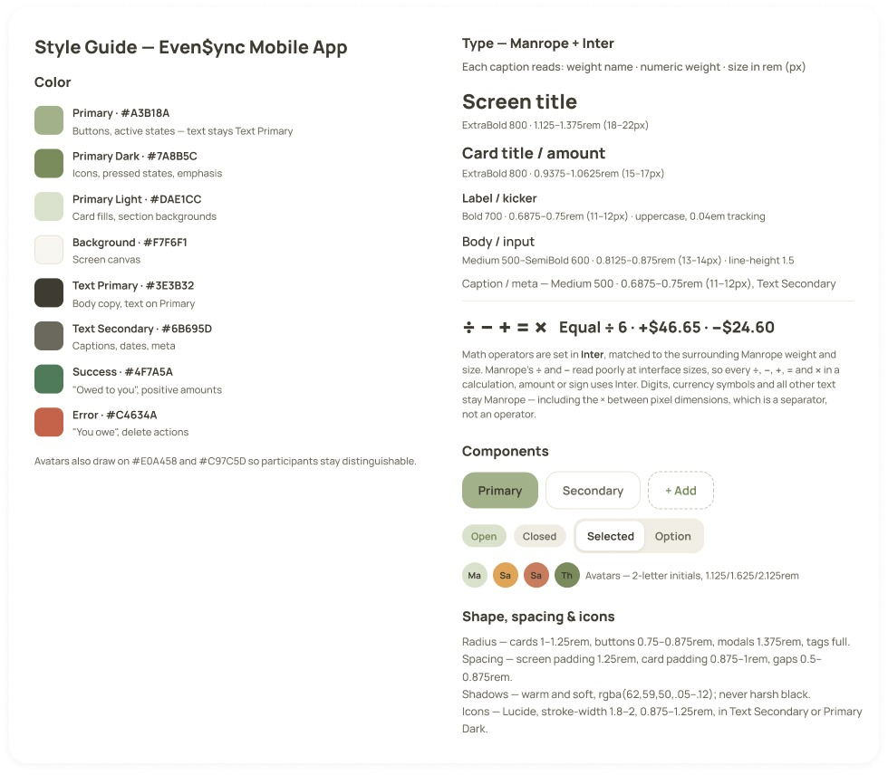
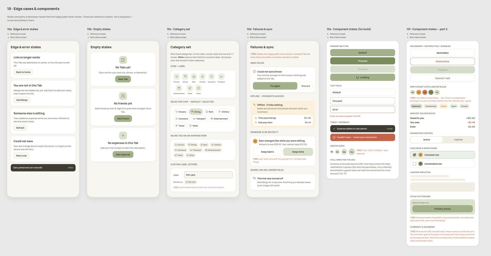
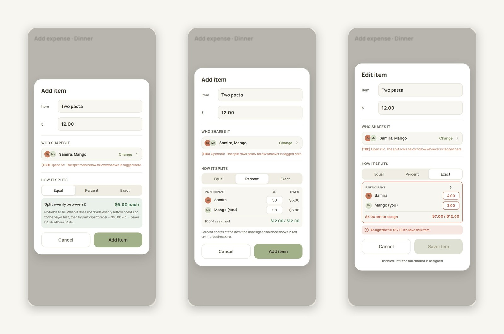
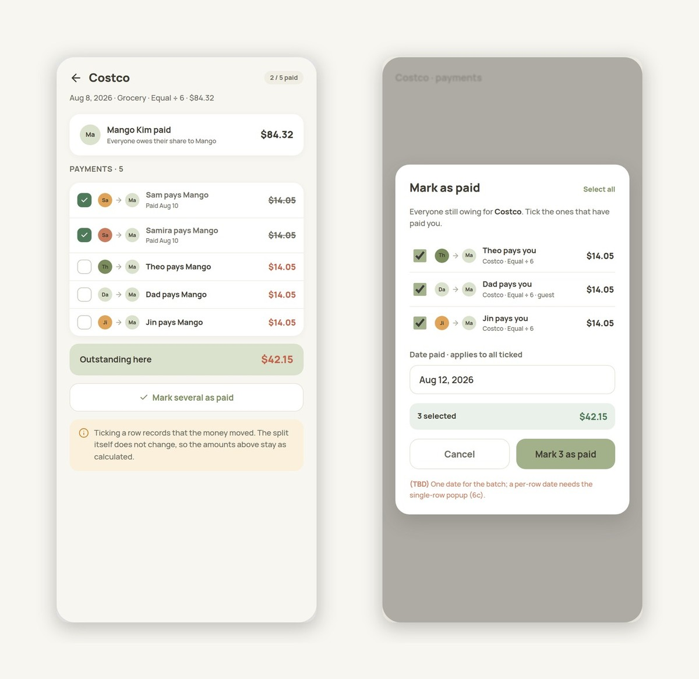
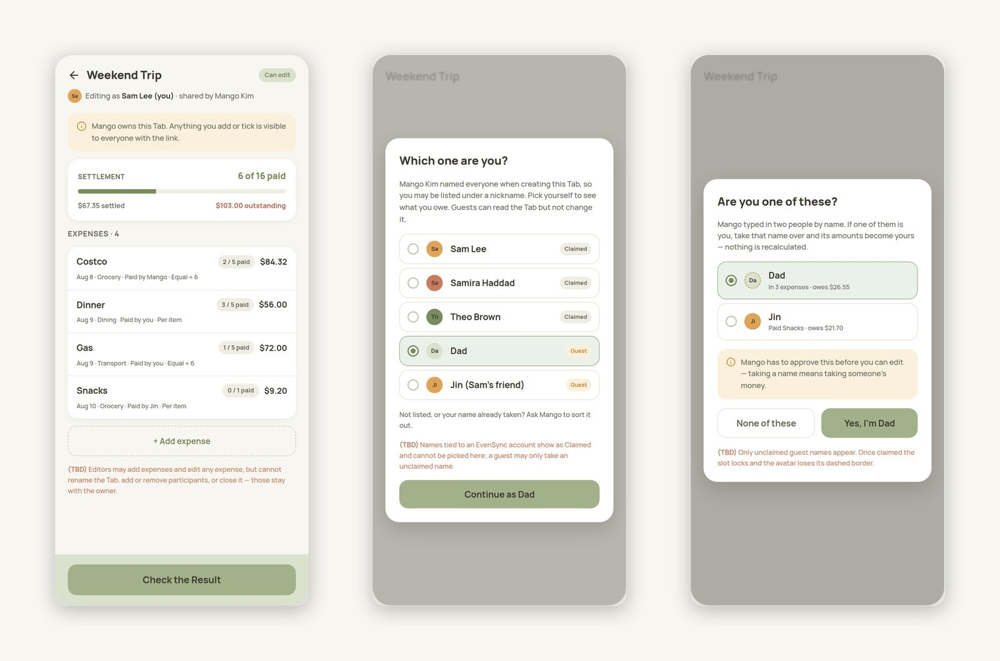
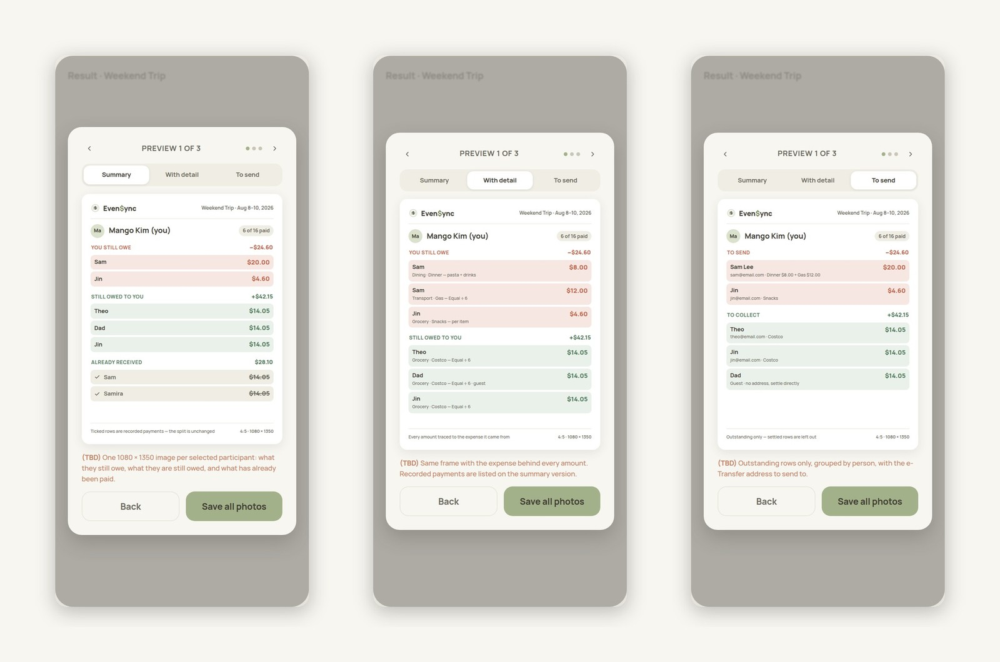
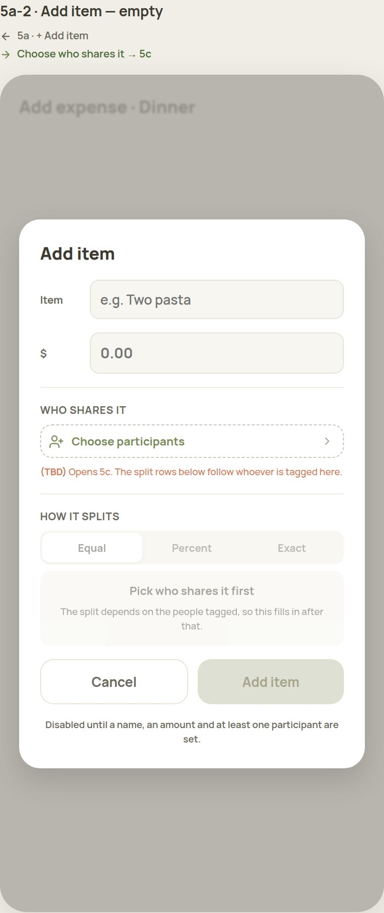

Even$ync is a mobile expense-splitting app — not a budgeting app, at least not yet. It answers one question: who owes whom, how much, and has it been paid? I led product definition and UX/UI design for the full app, designing close to 70 screens in user-flow order and handing them off to two developers, Jasmine and Guo, who are now building the backend.
Most expense-splitting apps default to dividing a bill evenly across everyone on it, and treat anything more granular as an edge case. In practice it isn't — one person covers the drinks, two people split an entrée, someone pays for a single item outright — so the actual starting goal was making that kind of item-by-item, per-person splitting easy enough that getting to a correct number never feels like extra work. Before any screen, I also drew a scope boundary: right now, Even$ync only answers who owes whom, how much, and has it been paid — nothing about spending categories, monthly limits, or financial planning. That's the current scope, not a permanent one; budgeting-style features are a plausible next layer once the splitting core is solid.
The core object is a Tab — a shared ledger that stays open for as long as it's active, and only gets archived once someone closes it. Each Tab holds expenses; each expense names one payer, a category, and either a single amount or a list of items. Every item is split on its own — Equal, Percent, or Exact — and tagged to whoever shared it.
A handful of early decisions did most of the work of making the rest of the app simple to design and to use:
I designed every screen in the order a person actually moves through the app — first launch to a closed Tab — rather than as a disconnected set of mockups. Onboarding and auth set the tone: a light olive palette, Manrope throughout with Inter reserved for arithmetic operators (÷ − + = ×), and a mark that puts an equals sign and a dollar sign in one ring.

A light olive palette with a documented text-on-color contrast rule, a 9-icon expense category set on Lucide, and participant avatars with two-letter initials on assigned colors so six people stay visually distinct at a glance. Type is Manrope throughout, with Inter reserved specifically for arithmetic operators (÷ − + = ×) — Manrope's own ÷ and − read poorly at interface sizes, so every calculation borrows Inter for just those characters while amounts, currency symbols, and everything else stay Manrope. The Even$ync mark went through several rounds before landing.

Alongside the screen flow, I built a second set of pages that aren't part of the app at all: reference sheets for whoever's building it. Error and empty states, the 9-category set as a single source of truth, what happens offline or when two people edit the same Tab at once, and every component in each of its build states — buttons, fields, chips, avatars, toggles, loading skeletons — plus a plain-language currency and rounding rule. These aren't in flow order and carry no in/out arrows on purpose; they're meant to be looked up, not walked through.

Every item — not every expense — is split on its own, in whichever of three modes fits it: Equal divides evenly and states the rounding rule up front (leftover cents go to the payer first, then by participant order); Percent shows live running totals and flags an unassigned balance in red until it reaches zero; Exact requires the full amount to be assigned before saving, with the same live-total and error-state treatment.

This was the most important UX decision in the app. Most splitting apps show a net number — "you owe Sam $12" — and stop there. Even$ync generates one payment row per person who owes the payer, and a row is ticked only when money actually moves. Recording a payment never changes the calculated split; when the last row is ticked, the app offers to close the Tab, and a later expense simply adds new rows without undoing anything already paid.

Participants can be app users or typed-in guests, and Tabs are shared by link with view-only or edit permission. A guest can later claim their name as a real account — but only with owner approval, since taking a name means taking on someone's share of the money. I mapped out every situation a link opener could be in: already a participant, signed in but not listed, no account at all, or asking to be matched to an existing guest name — five distinct entry states in total, each with its own screen.

Not everyone opens Even$ync to check a balance — plenty of settling-up still happens in a group chat. So the app can save the result as a shareable image, per participant, in three different layout types: a plain summary, a version with every amount traced back to the expense it came from, and a version formatted for sending directly. Every figure on every layout reconciles back to the same underlying dataset.

I designed in Figma and used Prototype to walk the team through the user flow, but not everyone found a clickable prototype easy to follow. So I annotated the file as carefully as I designed the screens: in/out arrows naming the exact control that leads to and from each frame, and (TBD) notes in a different color marking engineering-only logic — the equal-split remainder rule, edge cases, what's still undecided — clearly separated from anything that would actually appear in the app.
One consistent dataset — four expenses, six participants — runs through every one of the ~70 screens, and the numbers reconcile: shares sum to expense totals, nets sum to zero, and every result figure traces to a specific expense. The whole file lives in Figma, shared with Jasmine and Guo, and we've met regularly to walk through it together.

Design is complete. Jasmine and Guo are now building the backend, starting with the database that will hold Tabs, expenses, and participants. My focus for this phase is staying available to resolve the (TBD) notes as real engineering questions come up, and refining the handful of edge-case screens that only become clear once the data layer exists.
Being the only designer on the project meant every priority call was mine to make, starting from the user flow itself. When I had more than one layout in mind, I'd bring it to Jasmine or Guo and talk through which one would be better to build and easier for people to actually use. And I wasn't just designing finished screens — for every screen I had to think through what shows up before anything is selected, what has to happen so it never errors out, and what actually takes priority. That habit of thinking past the "done" state is what pushed my UX skills the most on this project.
Even$ync is a personal project, but I wanted it to hold up to real app quality — so I researched and built a style guide to stay consistent, designed with the full user flow in mind, and left (TBD) notes wherever engineering needed a heads-up. That rigor was for two audiences at once: the developers building it, and the users who'll eventually use it without ever seeing any of this.